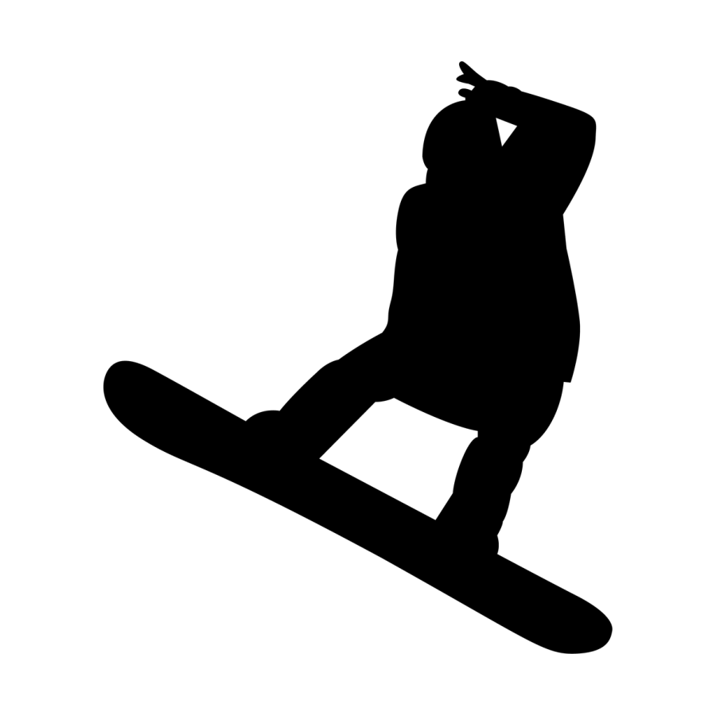

SPORT
Go Back- 実績のあるスポーツ -
Soft tennis
活動期間：中学一年生から高校三年生までの六年間
中学生 ：団体戦 市内大会 優勝、愛知県予選東三河大会 ベスト８
高校生 ：団体戦 オール三河大会東三予選 ベスト４
活動期間：小学一年生から小学校六年生までの六年間
愛知県大会 ３位
中日本大会 準優勝
Softboll
- 得意なスポーツ -

Snow board
Skiing
Table tennis